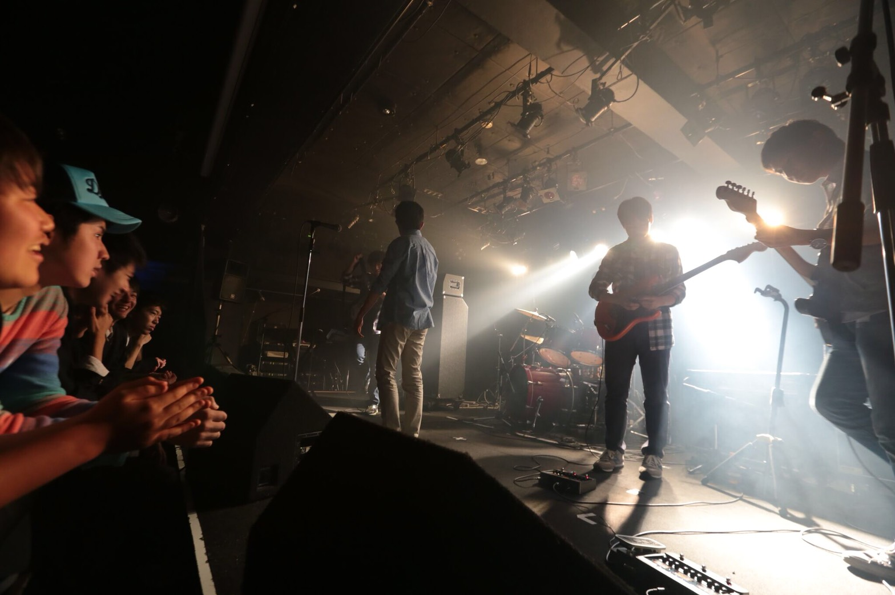
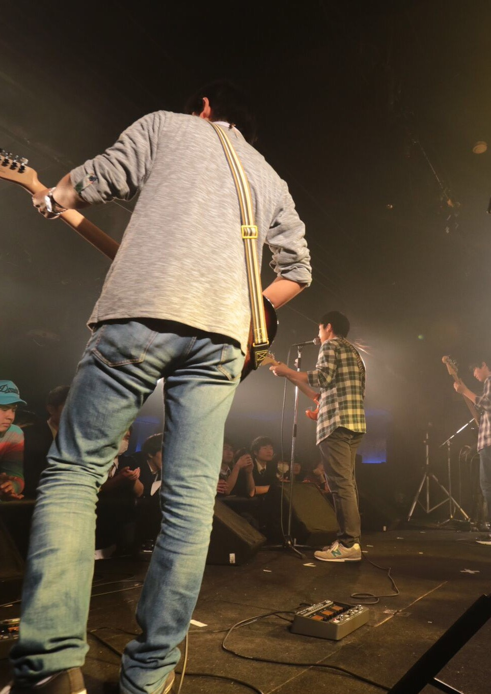

MENU
鎌田夏輝 natsuki kamada
武蔵野大学 データサイエンス学部 データサイエンス学科 2年
Python,HTML,PostgreSQL
music(guitar) , baseball
高校の時のライブ at 川崎
ステージから見た風景
神奈川県茅ヶ崎市
初めて研究というものをやった。
自分でサービスを考えるときに自分のしたいことをやっている既存のサービスがどういうものかを調べ、
どのように自分のオリジナリティーを出して既存のサービスと差別化するかを考えなければいけないことを学んだ。
また全く実装することができず自分の技術不足を痛感した。
2年次は技術的なことをしたかったため、自分の興味のあるスポーツ分野でVRを使った自宅でできるトレーニングシステムの構築をテーマにした。
現在日々エラーと格闘中、、、
Openposeを使用
データと数理1という講義の中で自分のグループで作成した成果物。
晴れ、曇り、雨を定義し過去の天気データからユークリッド距離計算を用い、距離を計算することで天気を当てることができる
天気予報(過去の天気を当てることができるものだから予報ではない😅)のようなシステム
データと数理という講義の課題として行列を使い画像の色合いから印象語を抽出するプログラム
1年前期のグループでprocessingで制作したシューティングゲーム。
初めてプログラミングをして実際に形にした作品